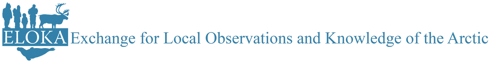

Open Science: Best Practices, Data Sovereignty and Co-production
Mar 29 2022; 1600-2000 CEST
Open Science: Best Practices, Data Sovereignty and Co-production


0.1 About
These materials reflect a collaboration between the Arctic Data Center, the Navigating the New Arctic Community Office, and ELOKA as part of our organizational commitments to raising awareness and promoting best practices in data management, increasing data literacy, and engaging the community in conversations about data governance. These materials are associated with a workshop presented as part of the Arctic Science Summit Week 2022.
0.2 Schedule
This workshop is being held (online) on Tuesday March 29th at 1600 CEST, within the full ASSW programme.
0.2.1 Code of Conduct
Please note that by participating in this activity you agree to abide by the NCEAS Code of Conduct and NNA-CO Guiding Principles.